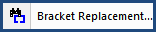
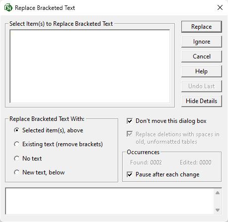

This command can also be executed from the SI Editor's Toolbar, Right-click menu, or by using the keyboard shortcut Ctrl+B.
The Bracket Replacement tool provides an automated process for identifying Bracketed Options to select or fill in the option to be included in the specification. Unselected options and their corresponding brackets are removed.

 For inserting smaller amounts of text, the New Text, below option is preferable. However, when inserting a larger amount of text it is recommended to enter the text directly when editing the Section.
For inserting smaller amounts of text, the New Text, below option is preferable. However, when inserting a larger amount of text it is recommended to enter the text directly when editing the Section.
When checked, the screen position remains fixed, even if the window covers the selected bracketed options within the Section. When unchecked, the window will automatically adjust its position to display the location of the bracketed options within the Section text.
This applies to the Unformatted Tables and will not change the way Formatted Tables are handled. Within an Unformatted Table, this option will replace any character deleted from a table during bracket replacement with a space to preserve the table layout.
 Using Bracket Replacement within Formatted Tables will not delete empty rows or columns when all the bracketed options are removed. Use the Table menu to Delete empty rows or columns.
Using Bracket Replacement within Formatted Tables will not delete empty rows or columns when all the bracketed options are removed. Use the Table menu to Delete empty rows or columns.
A counter that tracks how many bracketed options have been found and edited since the function was activated. The counter resets when the window is closed (including when the Pause After Each Change check box is used).
When you replace the bracketed text, your cursor will remain in place, and the window will close without moving to the next occurrence. This allows you to remain in the same location to continue editing. When this option is turned off, it will continue to process all the bracketed options in the Section, stopping when it reaches the end of the Section.
 The counter is not available when using this option.
The counter is not available when using this option.
 To continue to find subsequent occurrences, use the F3 key or the Find Next button on the SI Editor's Toolbar.
To continue to find subsequent occurrences, use the F3 key or the Find Next button on the SI Editor's Toolbar.
 If you do not want to keep any of the listed bracketed options, do not select any of the options under the Select Items(s) to Replace Bracketed Text window, then click the Replace button. This will remove all the text and brackets.
If you do not want to keep any of the listed bracketed options, do not select any of the options under the Select Items(s) to Replace Bracketed Text window, then click the Replace button. This will remove all the text and brackets.
 To choose multiple selections, click the first option, hold the Shift Key, then click the last option. All highlighted items will be inserted, while brackets and unselected options will be removed. To select non-sequential options while removing brackets and unselected options, hold the Ctrl Key and click on the desired choices.
To choose multiple selections, click the first option, hold the Shift Key, then click the last option. All highlighted items will be inserted, while brackets and unselected options will be removed. To select non-sequential options while removing brackets and unselected options, hold the Ctrl Key and click on the desired choices.
Users are encouraged to visit the SpecsIntact Website's Support & Help Center for access to all of our User Tools, including Web-Based Help (containing Troubleshooting, Frequently Asked Questions (FAQs), Technical Notes, and Known Problems), eLearning Modules (video tutorials), and printable Guides.
| CONTACT US: | ||
| 256.895.5505 | ||
| SpecsIntact@usace.army.mil | ||
| SpecsIntact.wbdg.org | ||